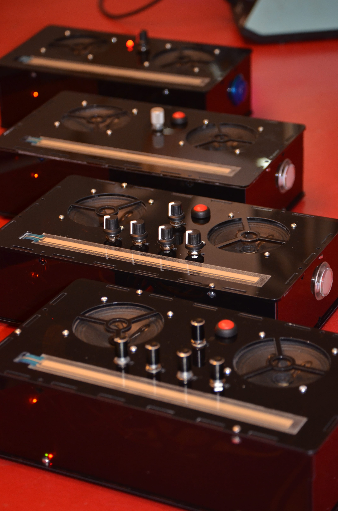
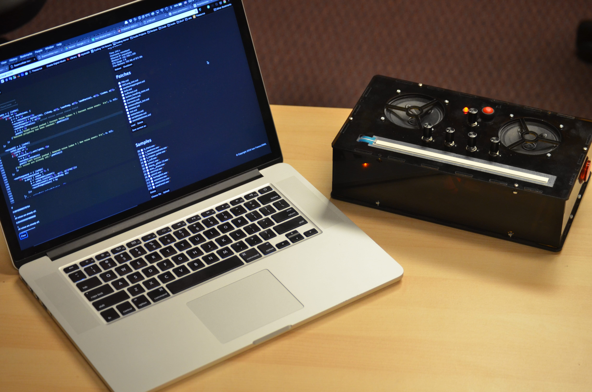

Noiseboxes
 Noiseboxes are a series of portable hand-held digital musical instruments designed to recreate some of the aesthetic qualities of their acoustic relatives in a completely novel design. The stand-alone format means that there is no need for cables, connections or configuration of any kind. An internal rechargeable battery and onboard speakers makes them ready to play whenever and wherever inspiration strikes.
Sound is generated with the embedded polyphonic FM synthesis engine. Each instrument can produce up to 8 simultaneous sustained voices with sonic output that can move from simple harmonic tones to dense chaotic noise.  The external controls include buttons, knobs (on some versions), and a positional touch sensor that are mapped to voice selection, pitch, and effects parameters. An accelerometer allows the performer to control subtle sound modulations through manipulation and orientation of the instrument through physical space.
Additionally, the voices can be tuned or scaled as desired and the controls flexibly mapped via ethernet or WiFi using the Prynth web-based editor.
Gallery